Maternal family · 母亲的家人
Education, devotion, and the people behind my journey.
From Nantong to Nanjing, and eventually to my studies abroad, this side of my family taught me how quietly sustained care can shape a life.
Grandparents · 外公外婆
The first generation who changed their future through education.
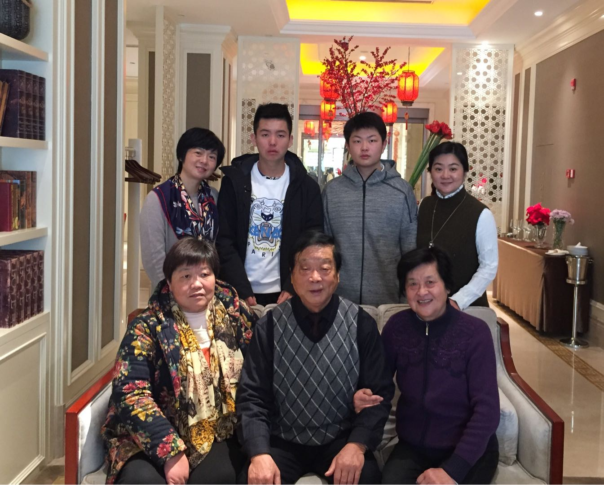
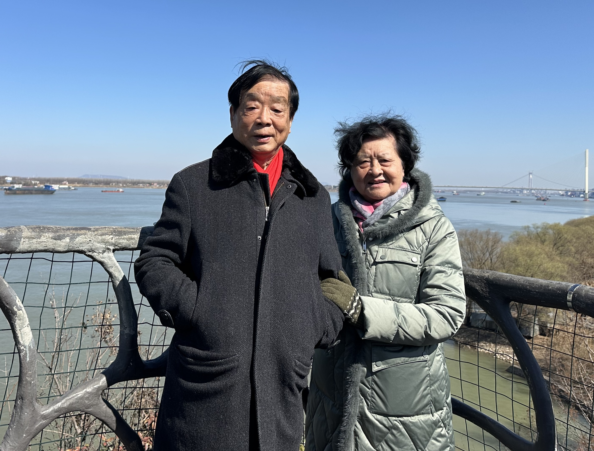
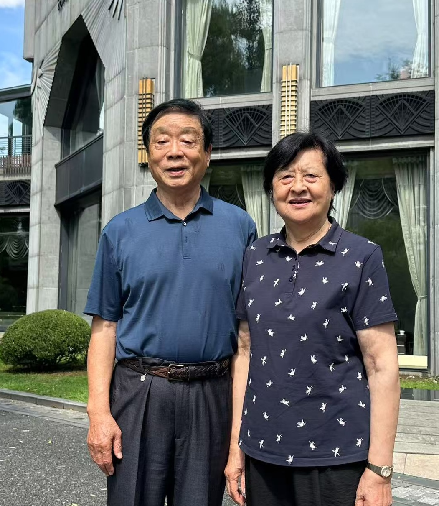

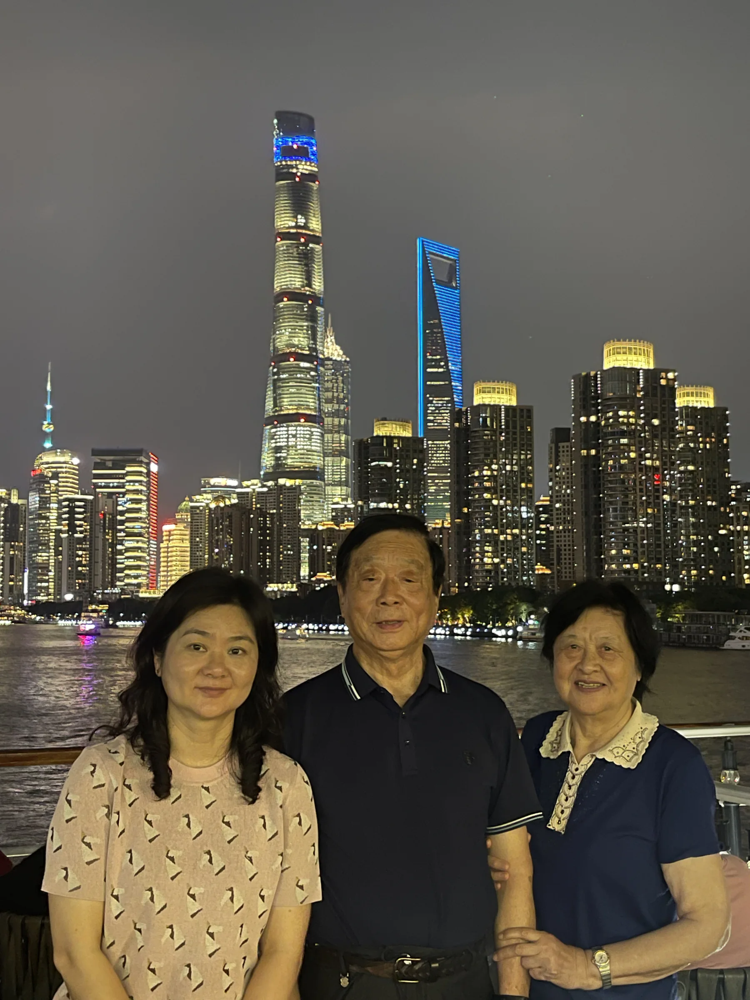
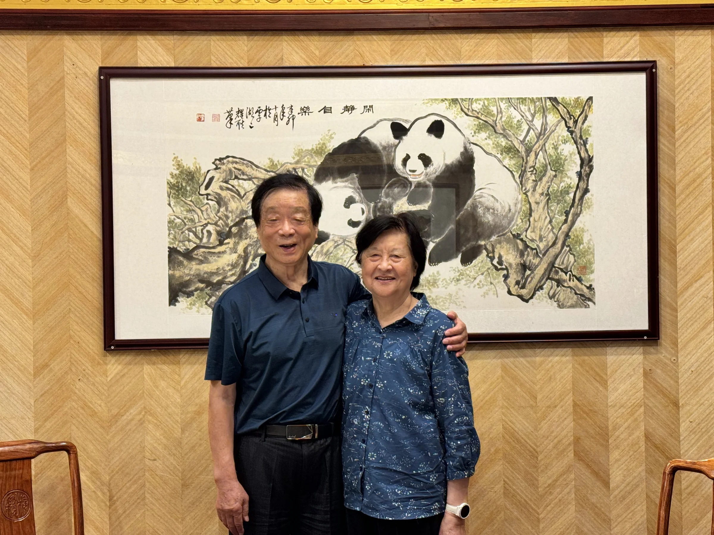
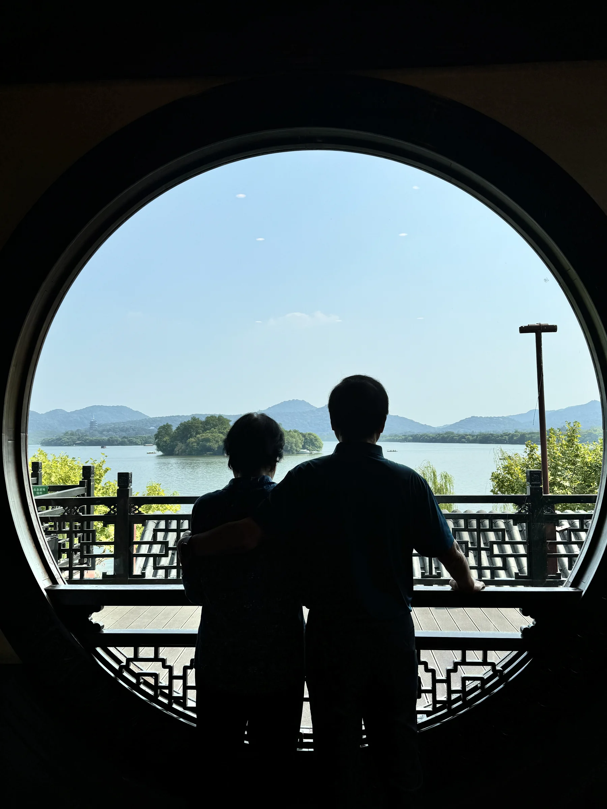
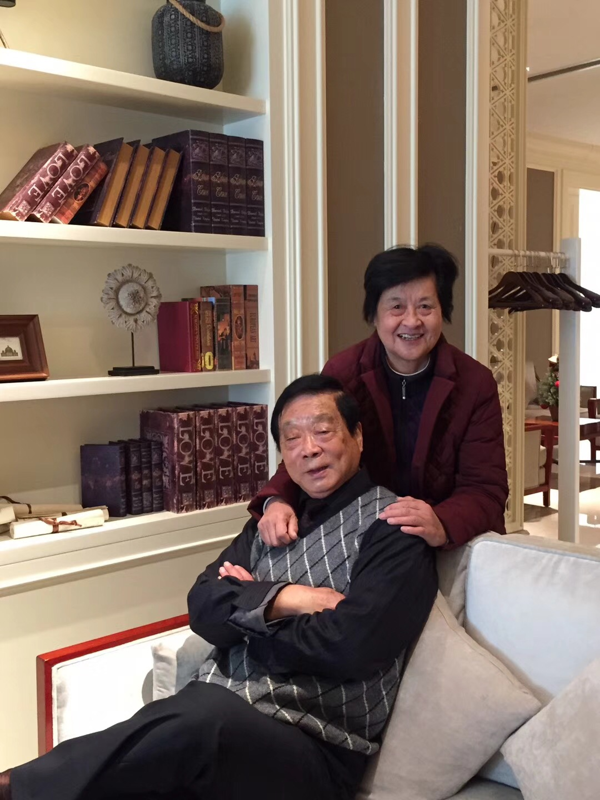
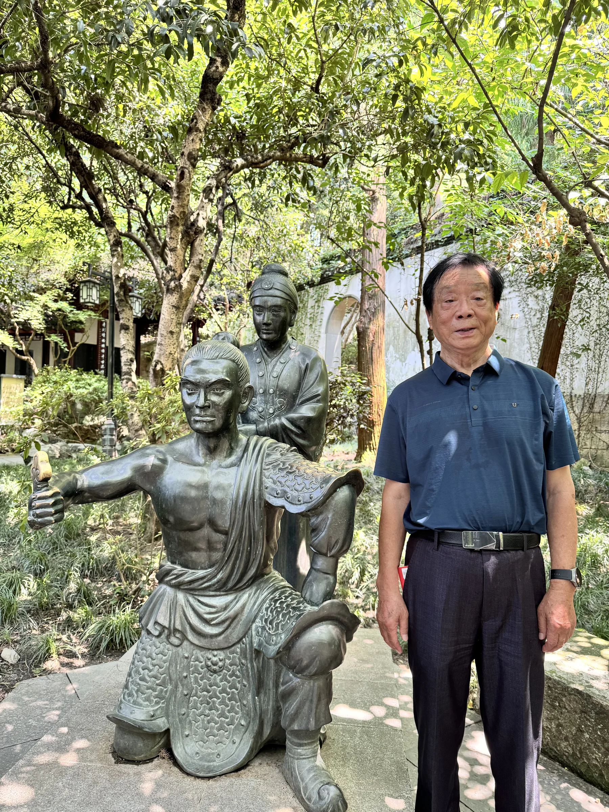
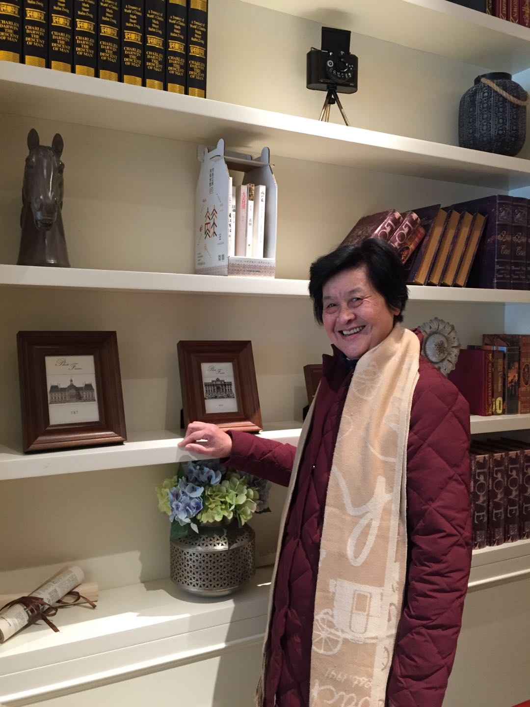
My maternal grandparents were both born in the coastal city of Nantong, Jiangsu. As the first generation in our family to attend university, they carried with them the dreams and determination to change their future through education. After graduating, they moved to Nanjing—my own birthplace—where they devoted their careers to public service and community development.
More than just loving grandparents, they have been the true sponsors of my education. Their hard work, resilience, and belief in the power of learning laid the foundation for me to pursue my studies abroad. Without their dedication and support, my journey to study in the United States would not have been possible. Their story is not only my family's pride, but also a quiet testament to the strength of perseverance and intergenerational love.
我的外公外婆（嗲嗲奶奶）出生在江苏省的海滨城市——南通。作为我们家族第一代大学生，他们用知识改变命运，并在毕业后前往我的出生地南京工作，为社会奉献了自己的青春与智慧。
在我人生的学习旅程中，他们不仅是亲人，更是幕后支持者。他们辛勤工作、不懈努力，用实际行动为我提供了走出国门、来到美国深造的机会。没有他们的默默奉献，就没有今天的我。他们的经历，是我们家族引以为傲的传奇，也是跨代关爱的真实写照。
Mother · 妈妈
A journalist, an editor, and my most constant supporter.
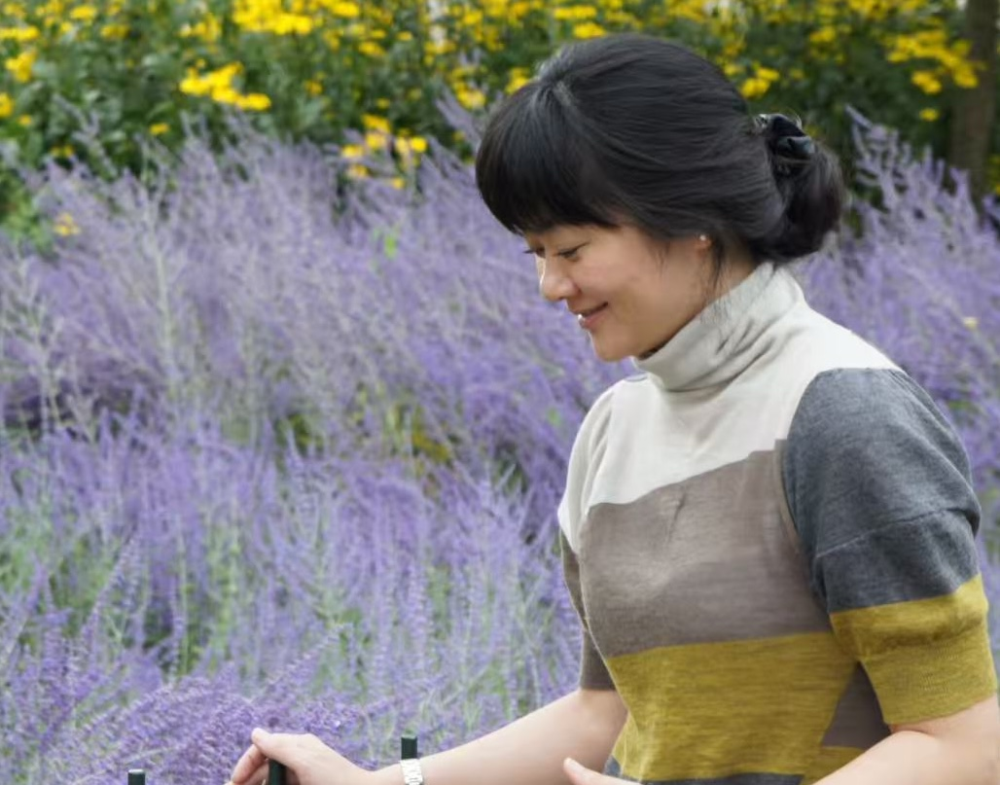

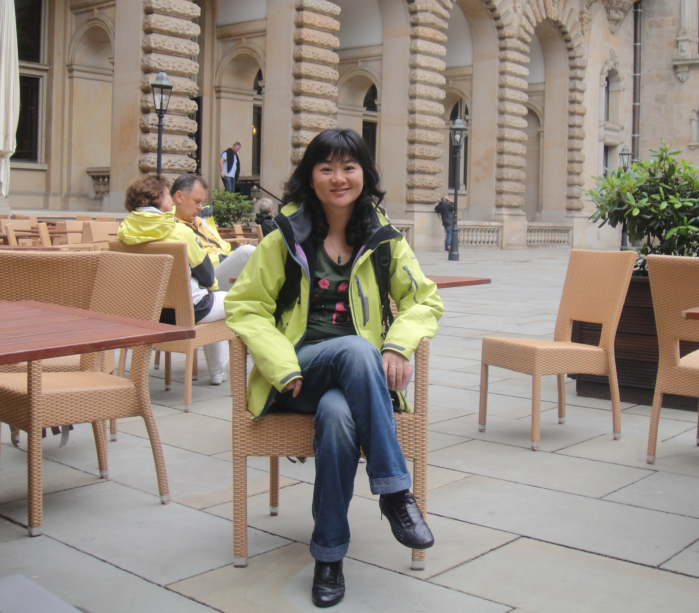
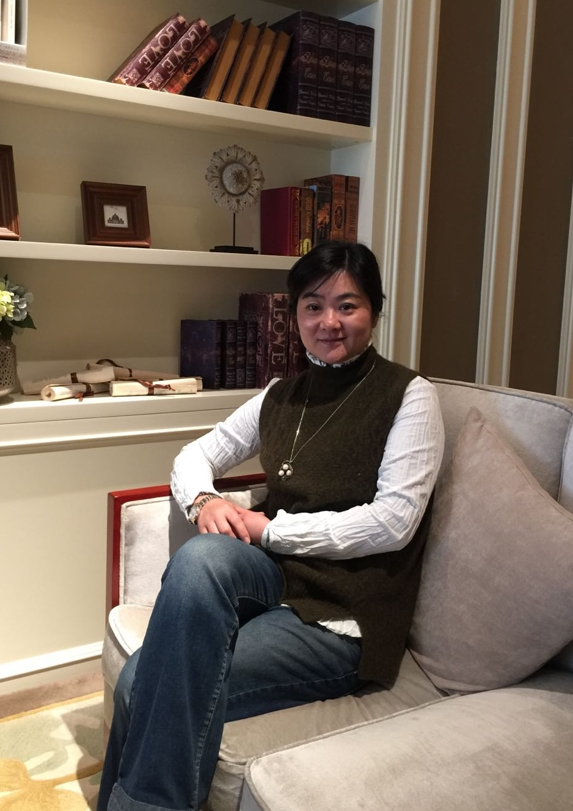
My mom began her career as a journalist, passionately pursuing stories and truth. Later, she transitioned to a quieter yet equally important role as an editor at a television station, working diligently behind the scenes. Throughout my life, she has been a pillar of strength—raising me with love, care, and unwavering dedication.
She supported me in everything I did, no matter how big or small. From school to hobbies, from doubts to dreams, my mom was always there—quietly, faithfully, and wholeheartedly. Her presence has shaped who I am, and her quiet sacrifices are written into every step of my journey.
我的妈妈曾是一名记者，年轻时奔走于一线追寻新闻与真相。后来她退居幕后，在电视台担任编辑，默默耕耘，用专业和坚守支持着媒体工作。
在我的成长过程中，她是那个始终不离不弃的人。她含辛茹苦地抚养我长大，不论我热爱什么、尝试什么，她总是给予我最坚定的支持。从学习到兴趣，从迷茫到梦想，她始终默默陪伴，是我人生旅途中最温暖的底色。